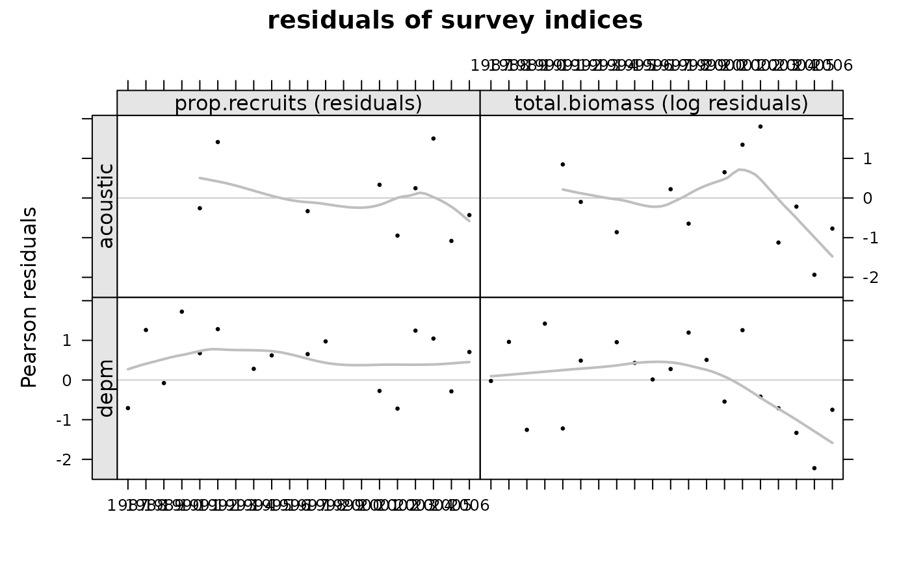

Plot of Pearson residuals of survey indices
plot-methods.RdMethod to plot bbm fitting, if applied to a bbmFit object. The output are several plots.
Firstly, the estimated abundance and next the fitted versus observed indices (with one plot for each survey).
Note that in plots related to indices the yaxis doesn't has a scale.
The visual is about the difference between the two lines, not about the value of each line, which in any case would be very difficult to assess visually.
Method to produce scatterplots of Pearson residuals of survey indices, if applied to a bbmFitresiduals object.
# S4 method for bbmFit,missing plot(x, y, ...) # S4 method for bbmFitresiduals,missing plot(x, y = missing, auxline = "smooth", ...)
Arguments
| x | An |
|---|---|
| y | Ignored. |
| ... | Additional argument list. |
| auxline | A string defining the type of line to be added, by default uses 'smooth', a common alternative is to use 'r', a regression, or leave it empty ''. |
Value
If class(x)=='bbmFit', a plot with estimated abundances and one extra plot for each survey with fitted and observed indices.
If class(x)=='bbmFitresiduals', a plot with stardardized residuals.
Examples
# Load data data(ane) # Run the assessment obj <- bbm( catch.ane, indicesB=indicesB.ane, indicesP=indicesP.ane, control=control.ane, inits=inits.ane)#> outer mgc: 2.991218 #> outer mgc: 2.983554 #> outer mgc: 2.994433 #> outer mgc: 2.980339 #> outer mgc: 2.989589 #> outer mgc: 2.985185 #> outer mgc: 2.990111 #> outer mgc: 2.984663 #> outer mgc: 2.986485 #> outer mgc: 2.988286 #> outer mgc: 2.987929 #> outer mgc: 2.986843 #> outer mgc: 2.987386 #> outer mgc: 2.987386 #> outer mgc: 2.987386 #> outer mgc: 2.987386 #> outer mgc: 2.987386 #> outer mgc: 2.987386 #> outer mgc: 2.987386 #> outer mgc: 2.987386 #> outer mgc: 2.987385 #> outer mgc: 2.987387 #> outer mgc: 2.987385 #> outer mgc: 2.987387 #> outer mgc: 2.987382 #> outer mgc: 2.98739 #> outer mgc: 2.987383 #> outer mgc: 2.987388 #> outer mgc: 2.98738 #> outer mgc: 2.987392 #> outer mgc: 2.987369 #> outer mgc: 2.987403 #> outer mgc: 2.987363 #> outer mgc: 2.987409 #> outer mgc: 2.987322 #> outer mgc: 2.98745 #> outer mgc: 2.98723 #> outer mgc: 2.987541 #> outer mgc: 2.987124 #> outer mgc: 2.987647 #> outer mgc: 2.986773 #> outer mgc: 2.987998 #> outer mgc: 2.986082 #> outer mgc: 2.988689 #> outer mgc: 2.986608 #> outer mgc: 2.988164 #> outer mgc: 3.008474 #> outer mgc: 2.96631 #> outer mgc: 2.986905 #> outer mgc: 2.987863 #> outer mgc: 2.986374 #> outer mgc: 2.988397 #> outer mgc: 2.986725 #> outer mgc: 2.988047 #> outer mgc: 2.9823 #> outer mgc: 2.992471 #> outer mgc: 2.985849 #> outer mgc: 2.988921 #> outer mgc: 2.987386 #> outer mgc: 2.991218 #> outer mgc: 2.983554 #> outer mgc: 2.994433 #> outer mgc: 2.980339 #> outer mgc: 2.989589 #> outer mgc: 2.985185 #> outer mgc: 2.990111 #> outer mgc: 2.984663 #> outer mgc: 2.986485 #> outer mgc: 2.988286 #> outer mgc: 2.987929 #> outer mgc: 2.986843 #> outer mgc: 2.987386 #> outer mgc: 2.987386 #> outer mgc: 2.987386 #> outer mgc: 2.987386 #> outer mgc: 2.987386 #> outer mgc: 2.987386 #> outer mgc: 2.987386 #> outer mgc: 2.987386 #> outer mgc: 2.987385 #> outer mgc: 2.987387 #> outer mgc: 2.987385 #> outer mgc: 2.987387 #> outer mgc: 2.987382 #> outer mgc: 2.98739 #> outer mgc: 2.987383 #> outer mgc: 2.987388 #> outer mgc: 2.98738 #> outer mgc: 2.987392 #> outer mgc: 2.987369 #> outer mgc: 2.987403 #> outer mgc: 2.987363 #> outer mgc: 2.987409 #> outer mgc: 2.987322 #> outer mgc: 2.98745 #> outer mgc: 2.98723 #> outer mgc: 2.987541 #> outer mgc: 2.987124 #> outer mgc: 2.987647 #> outer mgc: 2.986773 #> outer mgc: 2.987998 #> outer mgc: 2.986082 #> outer mgc: 2.988689 #> outer mgc: 2.986608 #> outer mgc: 2.988164 #> outer mgc: 3.008474 #> outer mgc: 2.96631 #> outer mgc: 2.986905 #> outer mgc: 2.987863 #> outer mgc: 2.986374 #> outer mgc: 2.988397 #> outer mgc: 2.986725 #> outer mgc: 2.988047 #> outer mgc: 2.9823 #> outer mgc: 2.992471 #> outer mgc: 2.985849 #> outer mgc: 2.988921 #> outer mgc: 282597.9#> Warning: NaNs produced#> Warning: NaNs produced